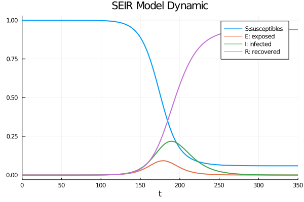
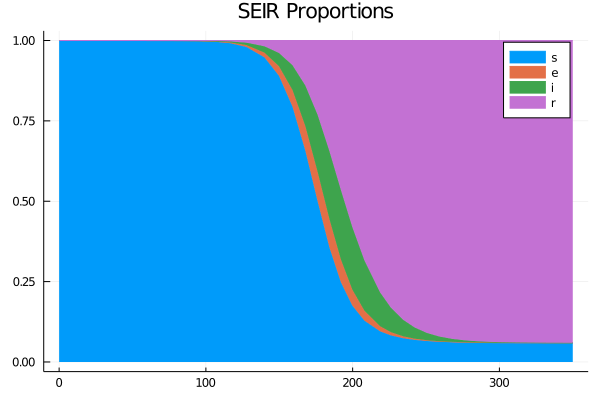
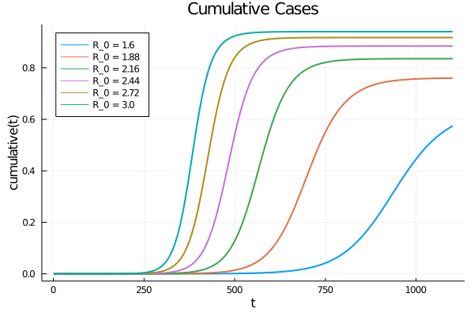
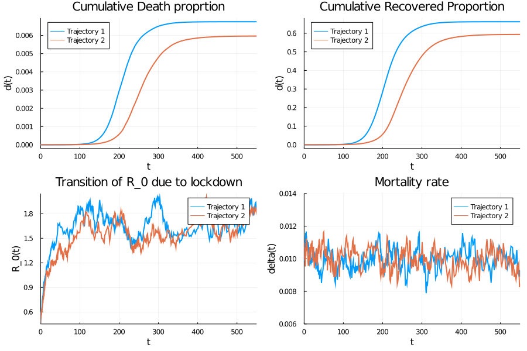

Stochastic differential equations: Application to epidemiology
A Dynamical System for Epidemiology
By Nadhir Hassen in Julia ODE Dynamical Systems
June 1, 2021
Introduction
A SIR model is an epidemiological model that calculates the theoretical number of people infected with a contagious disease in a closed population over time. The name of this class of models derives from the fact that they involve coupled equations connecting the number of susceptible people S (t), the number of infected people I (t) and the number of people who have recovered R (t). One of the simpler SIR models is the Kermack-McKendrick model .
The Kermack-McKendrick model is a SIR model for the number of people infected with a contagious disease in a closed population over time. It has been proposed to explain the rapid increase and decrease in the number of infected patients observed in epidemics such as plague (London 1665-1666, Bombay 1906) and cholera (London 1865). It assumes that the population size is fixed (i.e. No birth, death from disease, or death from natural causes), the incubation period of the infectious agent is instantaneous, and the incubation period of the infectious agent is instantaneous. duration of infectivity is the same as duration of illness. It also assumes a completely homogeneous population with no age, spatial or social structure.
Deterministic SIR model
The model consists of a system of the following ordinary differential equations
$$
\begin{split}
\frac{dS}{dt} &= -\frac{\beta}{N}SI\
\frac{dI}{dt} &= \frac{\beta}{N}SI-\gamma I\
\frac{dR}{dt} &= \gamma I,
\end{split}
$$
where $\beta$ and $\gamma$ is the infection birth and death rate, in other words we can interpret $ \beta $ as the transmission rate and $ \gamma $ the recovery rate of the disease, in addition we denote the effective reproduction factor (the rate of contamination)
$$
\begin{split}
\mathcal{R} = \frac{\beta S(0)}{\gamma N}.
\end{split}
$$
Assume that $ S (0), I (0), R (0) \geq 0 $ and $ S (0) + I (0) + R (0) = N $. $ \mathcal{R} $ represents the average number of secondary infections produced by an infected individual (susceptible to infection) during the incubation period. At $ t = 0 $, we assume that $ \beta = \gamma $. We can notice that $ \mathcal {R} = \mathcal {R} _0S (0) / N $. We can obtain that $ \mathcal{R} \leq 1 $, then $ I (t) $ is decreasing monotonically and therefore the epidemic is non-existent. If $ \mathcal{R}> 1 $, then $ I (t) $ starts by increasing and ends up decreasing until reaching zero: we are therefore in the presence of an epidemic. In addition, an important notion to take into consideration is the severity of the epidemic, this is the total number of cases or the final size of the epidemic noted as $ R (\infty) $. If we assume that $ R (0) = 0 $ and $ I (0) = 1 $ we can therefore obtain the value of $ R (\infty) $ from the differential equations $ \frac{dI}{dt} $ and $ \frac{dS}{dt} $
$$
\begin{equation}
\begin{split}
\frac{dI}{dS} &= -\frac{if (\beta /N)-\gamma I}{ if (\beta/N)}\
&=\frac{\gamma N}{\beta S}-1.
\end{split}
\end{equation}
$$
The solution can be obtained by the method of separations of variables and by using the initial conditions $ S (0) = N-1 $ and $ I (0) = 1 $, we obtain
$$
\begin{equation}
\begin{split}
I(t)+S(t) = \frac{\gamma}{\beta}N\ln S(t)+-\frac{\gamma}{\beta}N \ln(N-1)+N,
\end{split}
\end{equation}
$$
when $ t \xrightarrow{} \infty $ and $ I (\infty) = 0 $ implies
$$
\begin{equation}
\begin{split}
S(\infty) = N\left(\frac{\gamma}{\beta}\ln\left(\frac{S(\infty)}{N-1}\right)+1\right).
\end{split}
\end{equation}
$$
This result gives us $ R (\infty) = N-S (\infty) $.
Stochastic SIR model
Let $ S (t), I (t) $ and $ R (t) $ be the random variables which correspond to the number of individuals likely to be infected, individuals infected and individuals immunized respectively. We therefore have $ S (t) + I (t) + R (t) = N $. In this stochastic model there is no latent period, ie infected people are also infectious. As $ S (t) $ and $ I (t) $ are independent then the transition probabilities are
$$p{\Delta S(t)=i, \Delta I(t)=j|S(t), I(t)}=\begin{cases} \frac{\beta}{N}S(t)I(t)\Delta t+o(\Delta t), & \text{if } (i,j)=(-1,1), \\\
\gamma I(t)\Delta t+o(\Delta t), & \text{if } (i,j)=(0,-1),\\\
1-r_e, & \text{if } (i,j)=(0,0), \\\
o(\Delta t) & \text{otherwise}\end{cases}
$$
where $r_e=\left(\frac{\beta}{N}S(t)I(t)+\gamma I(t)\right)\Delta t+o(\Delta t)$. In the case when $ \Delta I (t) = - 1 $ then $ \Delta R (t) = 1 $. Consider that the initial conditions are $ S (0) = s_0 \geq0 $ and $ I (0) = i_0 \geq0 $ we have $ p_{i, j} (t) = p{(S (t) = i ), I (t) = j} $. To find the evolution of the following Markov chain we use the Kolmogorov equations such that
$$
\begin{equation*}
\begin{split}
\frac{d p_{(i,j)}(t)}{dt}=\frac{\beta}{N}(i+1)(j-1)p_{(i+1,j-1)}(t)+\gamma(j+1)p_{(i,j+1)}(t)-\left(\frac{\beta}{N}ij+\gamma j\right)p_{(i,j)}(t),
\end{split}
\end{equation*}
$$
where $ i = 0,1,2, \dots, N $, $ j = 0,1,2, \dots, N-1 $ and $ i + j \leq N $. So when $ S (0) = Nj \approx N $ and $ I (0) = j $ small enough, we have $ \mathcal {R} = \frac {\beta} {\gamma} \frac {S (0 )} {N} \approx \frac {\beta} {\gamma} = \mathcal {R} _0 $. We are therefore in the presence of a process of pure birth and death. Indeed, the death rate corresponds to the reimission rate $ \mu = \gamma $ and the birth rate to the rate of new infections $ \lambda \approx \beta $. At the start of the pandemic i.e. when $ I (0) \approx j $ is small enough, the likelihood of an epidemic ending very quickly (or avoiding an epidemic) could be considered a process. of pure birth and death. So the probability of not having an epidemic can be summarized as
$$
\begin{equation}
\begin{cases}
1 & \text{if } \mathcal{R}\leq 1\\\
\left(\frac{1}{\mathcal{R}_0}\right)^{j} & \text{ if } \mathcal{R}_0>1.
\end{cases}
\end{equation}
$$
The SEIR model- a variant of the original model
To make the model more realistic, we modify the model, the states are now $ S \xrightarrow{}E \xrightarrow {} E \xrightarrow {} I \xrightarrow{}R $. We always assume that the size of the population remains fixed $ S (t) + E (t) + I (t) + R (t) = N $ for all $ t $. We redefine the transition rates between states as being
- $ \beta (t) $ the transmission rate or effective contact rate (the rate at which individuals go from $ S $ to $ E $).
- $ \sigma (t) $ the infection rate (the rate at which individuals go from exposed to infected) \item $ \gamma $ the recovery rate (the rate at which individuals go from $ I $ to $ R $ and stay in $ R $ assuming they die or create immunity)
As in the previous section, we represent the model by a system of the following ordinary differential equations
$$
\begin{equation}
\begin{split}
\frac{dS}{dt} &= -\frac{\beta}{N}SI\
\frac{dE}{dt} &= \frac{\beta}{N}SI-\sigma E\
\frac{dI}{dt} &= \sigma E - \gamma I\
\frac{dR}{dt} &= \gamma I.
\end{split}
\end{equation}
$$
As transmissions depend on time, we define $ \mathcal {R} _0: = \beta (t) / \gamma $, this implies that
- The transitions from the state $ I $ to $ R $ are done at a Poisson rate $ \gamma $, the average time spent in the infected state $ I $ is therefore $ 1 / \gamma $.
- Prolonged interactions occur at the rate $ \beta $, so that a new individual entering the infected state will potentially transmit the virus to other individuals with an average of $ \mathcal {R}_0 = \frac{\beta }{\gamma} $.
To solve this problem we can make the following reparametrization $ \beta (t) = \gamma \mathcal {R} _0 (t) $, moreover we define $ s: = S / N $ as being the proportion of individuals in each state, by dividing each equation by $ N $ we obtain the following system
$$
\begin{align}
\begin{split}
\frac{dS}{dt} &= -\gamma \mathcal{R}_0 s i\\
\frac{de}{dt} &= \gamma \mathcal{R}_0 s i - \sigma e\\
\frac{di}{dt} &= \sigma e - \gamma i\\
\frac{dR}{dt} &= \gamma i.
\end{split}
\end{align}
$$
We can therefore express the proportion of individuals restored by $ r = 1-s-e-i $ due to the fact that the states form a partition. By solving this system of differential equations, we can visualize the dynamics of the model in the first figure by considering the case of province of Quebec on November $20, 2020 $ as well as the proportions corresponding to this population in second.

The SEIR model with confinement policy
So far we have assumed that $ R_{0} (t) $ depends only on the infection rate $ \beta (t) $ and recovery rate $ \gamma (t) $. A containment measure can disturb the rate of contamination $ R_{0} (t) $. We therefore introduce an additional constraint $ \frac{dR_0}{dt} = \nu (\mathcal{\mathbf{R}} _ 0- \mathcal{R} _0) $, the parameter $ \nu $ controls the speed of dispersion from $ \mathcal {R}_0 $ to the reference value $ \mathcal{\mathbf{R}}_0 $ following the containment policy (social distancing, closure of shops for example). Another element so far considered constant is the mortality rate, releasing this assumption to better adapt the model to reality, then the variation in the mortality rate is expressed by $ \frac{d}{dt} d (t ) = \delta \gamma i $. Thus by adapting the present model to reality, we fix $ \sigma = 1/5 $ the incubation rate of the disease, $ \gamma = 1/14 $ which corresponds to 14 days according to the ministry of public health, the reproduction rate of the reference disease $ \mathcal{\mathbf{R}}_0 = \mathcal{R}_0 = 1.5 $ and $ \delta = 0.004 $ the mortality rate in Quebec. In the figure of cumulative cases confirms that after a containment policy, the rate of contamination delays the cases of infections (the blue line). 

The SEIR model with random shocks
We now want to incorporate several random effects that affect the rate of transmission $\mathcal{R}_0(t)$ from shocs through the process $ \beta (t) $, this can be explained by the fact of have different behavior of the population coming from different sources of information (social networks, presidential elections, protests for individual freedom, etc.), but also shocks can come from different regional policies (red zone, orange zone, green zone) which are not subject to the same confinement restrictions.
To reflect this randomness, we can incorporate into the variation of the contamination rate $ R_0 (t) $ a stochastic volatility $ \sigma \sqrt{R_0} $. To ensure that the process is a stationary process in the weak sense we have to add $ \sqrt{R_0} $. Then we define the instantaneous variation of the contamination rate such that
$$ \begin{equation} d\mathcal{R}_{t} = \nu\left(\mathcal{\bar{R}}_0(t)-\mathcal{R}_0(t)\right)dt+\sigma\sqrt{\mathcal{R}_0 (t)}dW_t \end{equation} $$
where $ W $ is a standard Brownian motion (or Weiner process). To get even closer to reality, we must also incorporate a random effect in the death rate, indeed not all individuals react in the same way to infection, this can be caused by age, regional area, state of health, etc. Let $ \delta (t) $ be the mortality rate, we make some assumptions below
- $ \mathbf{\delta} t $ represents a mortality reference, which would be the average of the process.
- a diffusion term with $ \alpha \sqrt {\delta (1- \delta)} $ volatility, with $ 0 \leq \delta \leq 1 $.
From what follows, we define the death rate as a stochastic process according to
$$
\begin{equation}
\begin{split}
d\delta_t = \theta(\mathbf{\delta}-\delta_t)dt+\alpha\sqrt{\delta_t(1-\delta_t)}dW_t
\end{split}
\end{equation}
$$
with $ \theta $ is the parameter which controls the dispersion between the current mortality rate at time $ t $ and the reference mortality rate to be maintained. The general form of the stochastic differential equation becomes
$$
\begin{equation}
\begin{split}
\frac{dS}{dt} &= -\gamma \mathcal{R}_0 s i\\
\frac{di}{dt} &= \gamma \mathcal{R}_0 s i - \gamma i\\
\frac{dr}{dt} &= (1-\delta)\gamma i\\
\frac{dd}{dt} &= \delta \gamma i\\
\frac{d\mathcal{R}_0}{dt} &= \nu\left(\mathcal{\mathbf{R}}_0(t)-\mathcal{R}_0\right)\\
\frac{d\delta}{dt} &= \theta\left(\mathbf{\delta}-\delta\right).
\end{split}
\end{equation}
$$

The solution of this stochastic differential equation leads to several possible realizations due to the random effect of shocks (more precisely to the white noise processes incorporated in our modeling). These two realization of the solution which represents two possible scenarios to control the pandemic. In the trajectory figure we can clearly see that with a containment measure, the mortality rate reaches a peak and stabilizes, the same observation is made for the recovery rate. Another important element to consider is the effect of containment on controlling the rate of contamination $\mathcal{R}_0 $ which greatly depends on the rate of infections.